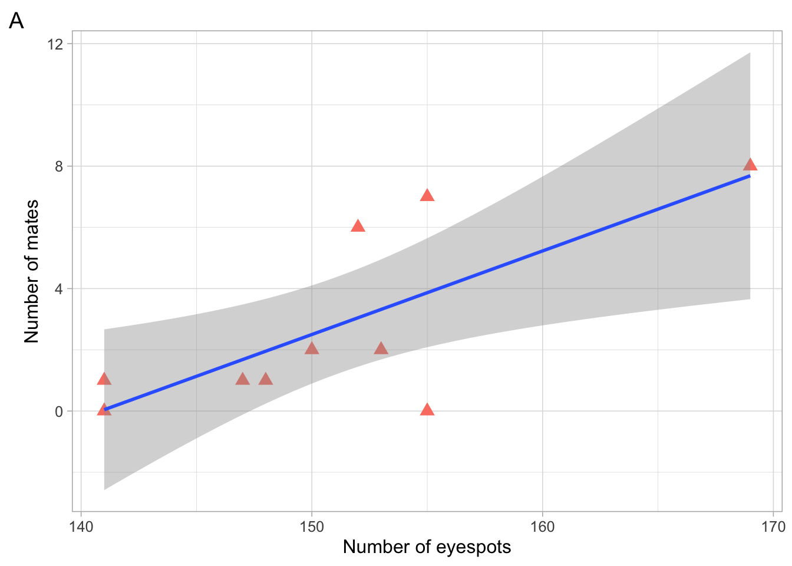

Chapter 4 Lab 5 - Sexual Selection
4.1 Introduction
Description of lab
During this week’s lab, students will analyze and interpret a variety of peacock train empirical data for evidence of sexual selection and trade-offs.
Students will gain knowledge/experience writing mathematical hypotheses, analyzing empirical sample data using RStudio (specifically ggplot2,a popular R package for data visualization) and interpreting it to identify the supported hypotheses. Students will also consider a range of supplemental data to assess the validity of the sexual selection theory.
In this R tutorial, you will generate 2 scatterplots and a bargraph:
1 - Relationship between peahen mates and the number of eyespots in the peacock's train.
2 - The relationship number of copulations a peacock obtains and the number of eyespots in the peacock's train
3 - Change in number of copulations for those peacocks that had eyespots removed
You will also run some statistical analyses on your data.4.2 Getting Started
First, install the packages you need to use ggplot ggplot is a graphing software
install.packages("tidyverse")
install.packages("ggplot2")#Then, load each package
library(tidyverse)
library(ggplot2)Next, open R Studio and set your working directory
HINT: use the setwd(” “) command (as in Lab 2)
Download the l5_dataset.csv file from brightspace and save it to your working directory folder.
Read the l5_dataset.csv into R Studio using the ‘read.csv’ command (as in Lab 2)
# make sure to give it the vector name 'l5_dataset'
l5_dataset <- read.csv("l5_dataset.csv", header=TRUE)Now load your metadata file that contains important information about your dataset NOTE: the information on the variables can be found in the l5_metadata.csv file (on brightspace).
#load the metadata file and name the vector l5_metadata
l5_metadata <- read.csv("l5_metadata.csv")
#now open both the metadata file and the l5_dataset, use:
view(l5_metadata)
view(l5_dataset)Each column in the l5_dataset is described in your metadata file NOTE: you can come back to this metadata file at any point to find your references, and if you need to check what each column of the l5_dataset means The view() command will only work if you loaded the ‘tidyverse’ package above
Which column represents the mean change seasonal copulations of peacocks with 20 eyespots removed from trains? Which variables are your control? which are your experimental?
4.3 Plotting Figure 1 - Eyespots increases mates
4.3.1 STEP 1:
Import columns as vectors, this is ALREADY done for you.
f1_eyespots <- l5_dataset$f1_n_eyespots
f1_mates <- l5_dataset$f1_n_mates
f2_eyespots <- l5_dataset$f2_n_eyespots
f2_cop <- l5_dataset$f2_n_cop
f3_cont <- l5_dataset$f3_cont
f3_exp <- l5_dataset$f3_exp4.3.2 STEP 2:
In the last lab you used the base plot functions to plot graphs, but ggplot2 creates graphs using a step-by-step process that combines independent layers. The ggplot2 package is more flexible and powerful than the base plot functions.
Generate a scatterplot using ggplot2, this step is outlined and you should refer to it when you are making the scatterplots for the next steps.
HINT: these steps are outlined in the Quantitative Guide (https://ahurford.github.io/quant-guide-all-courses/ggplot.html#making-scatter-plots-with-ggplot2)
#Let's begin build our graphic one step at a time
#first let's use the ggplot() function to specify our data frame and set our x and y variables within the aesthetic aes().
#When we run this code, it produces a blank figure with our x and y axis set because we haven’t specified the type of graphic we want.
ggplot(data = l5_dataset, aes(x = f1_eyespots, y = f1_mates))Now that we have our plot layer, let’s add the points to our scatterplot using another layer called geom_point
#to add a layer in ggplot() we can use the '+' symbol at the end of each line, like this:
ggplot(data = l5_dataset, aes(x = f1_eyespots, y = f1_mates)) +
geom_point()Let’s make the graph a little easier to read:
#add size and colour to your points using the 'size=', 'shape=' and 'colour=' aesthetics
#we've added the 'na.rm=TRUE' argument to remove any NA values in the l5_dataset
ggplot(data = l5_dataset, aes(x = f1_eyespots, y = f1_mates)) +
geom_point(size=3, shape=17, colour="salmon", na.rm=TRUE)You can find a list of R colors here, pick one you like and replace it with the ‘salmon’ colour: http://www.stat.columbia.edu/~tzheng/files/Rcolor.pdf You can find a list of shapes to pick from here, they are represented numerically (for example, ‘17’ represents a solid triangle). Pick one you like: http://www.sthda.com/english/wiki/ggplot2-point-shapes
Now that we have our main point plotted, let’s add a regression line to the scatterplot, this is ALREADY done for you:
#the argument 'method =“lm”' fits a linear model through your data
#the argument 'se=TRUE' adds a grey shaded confidence interval around the line of best fit
#the 'level=' argument specifies the level of the confidence interval to use
ggplot(data = l5_dataset, aes(x = f1_eyespots, y = f1_mates)) +
geom_point(size=3, shape=17, colour="salmon", na.rm=TRUE) +
geom_smooth(method=lm, se=TRUE, level=0.95, na.rm=TRUE)Ggplot2 also allows you to add axis labels to your plot, let’s add a tag to the graph called “A”, and axis labels using the ‘labs()’ function
#make sure you keep the 'na.rm=TRUE' argument
ggplot(data = l5_dataset, aes(x = f1_eyespots, y = f1_mates)) +
geom_point(size=3, shape=17, colour="salmon", na.rm=TRUE) +
geom_smooth(method=lm, se=TRUE, level=0.95, na.rm=TRUE) +
labs(tag="A", x="Number of eyespots", y="Number of mates")Here, we are naming the final plot ‘a’ so we can use patchwork to put all our plots together
#to make our graph look nicer, we can also add themes
#choose to add either the 'theme_dark()' or 'theme_light' for this graph
#use the 'base_size=' argument to change the size of the labels on your graph
a <- ggplot(data = l5_dataset, aes(x = f1_eyespots, y = f1_mates)) +
geom_point(size=3, shape=17, colour="salmon", na.rm=TRUE) +
geom_smooth(method=lm, se=TRUE, level=0.95, na.rm=TRUE) +
labs(tag="A", x="Number of eyespots", y="Number of mates") +
theme_light(base_size=12)
#view your figure by running 'a':
a
This is what your final figure should look like, with your own custom colour and shape!
4.4 Plotting Figure 2 - Eyespots Increases Copulations
NOTE: some of this code is only PARTIALLY written for you, refer to the steps above
4.4.1 STEP 3:
We already imported the columns as vectors in Step 1, you do not need to do this again. Let’s generate a scatterplot called ‘b’, this time replace the ‘???’ with the correct arguments (refer to step 2 for help)
NOTE: don’t forget to choose either the ‘theme_light’ or ‘theme_dark’ function
b <- ggplot(data = l5_dataset, aes(x =???, y =???)) +
geom_point(size=3, shape=17, colour="???", na.rm=TRUE) +
geom_smooth(method=lm, se=TRUE, level=0.95, na.rm=TRUE) +
labs(tag="B", x="???", y="???") +
theme_???(base_size=12)HINT: If you do not know what to label your x and y axis, refer to your metadata file
view(l5_metadata)Remember to use the Export button above your figure to save as an image
4.5 Plotting Figure 3 - Eyespots Increases Copulations
4.5.1 STEP 4:
Finally, let’s plot Figure 3 using ggplot2, we will call this figure ‘c’
First, let’s find the mean values for each treatment and create a data frame
#define your mean for both the control and experimental variables
control <- mean(f3_cont, na.rm=TRUE)
experimental <- mean(f3_exp, na.rm=TRUE)
#now create a value for your means
mean <- c(experimental, control)
#then create a dataframe that has your mean values for both control and experimental
df <- data.frame(group = c("Experimental", "Control"), mean)Now that you have your data frame set up, let’s plot the mean and standard deviation (sd) for the treatment groups Like before, we will use ggplot() and specify we want to use the ‘df’ dataframe
#'mean' will be the x variable, and 'group' will be the y variable
#use the 'geom_errorbarh()' function to add horizontal error bars to the plot using sd of the means
c <- ggplot(data=df, aes(x = mean, y = group)) +
geom_point(size = 4) +
geom_errorbarh(aes(xmin = mean - sd(df$mean), xmax = mean + sd(df$mean)), height = 0.2) +
labs(tag="C", x = "Mean", y = "") +
theme_light()
#in this case, group is a categorical variable with two levels: "Experimental" and "Control".
#it means that the points for the "Experimental" group will be grouped together on the top of the plot, and the points for the "Control" group will be grouped together on the bottom of the plot.
#this makes it easy to see the difference between the means of the two groups.4.5.2 STEP 5:
Now let’s plot the 3 figures you made together using a package called patchwork First, install patchwork and load the library
install.packages("patchwork")
library(patchwork)
Next, simply patch your plots ‘a’, ‘b’, and ‘c’ together using the ‘+’ symbol:
a + b + cNOTE: Now that you have all your plots together, shift the size of the plotting window in the bottom right to change the layout of the plot so that you can see everything better. Then, save your plot as an image using the Export button.
4.5.3 STEP 6:
Perform t.tests for control vs experimental data to determine if the means are significantly different between populations.
NOTE: Refer to the metadata file to determine which datasets to compare.
t.test(???, ???)To determine statistical significance, use the p-values you obtained from the t-tests. HINT: If the p-value is below 0.05, the datasets compared are significantly different.